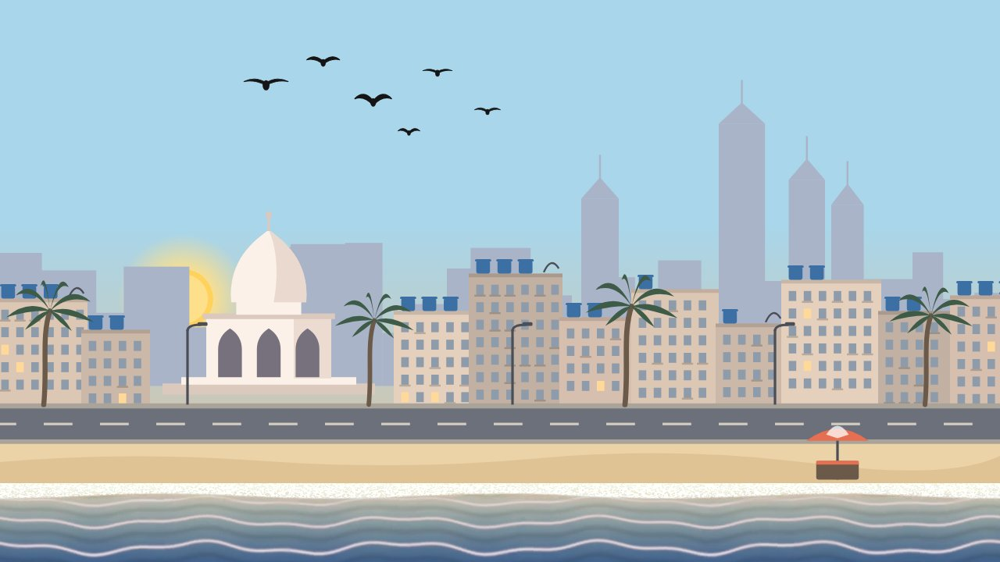
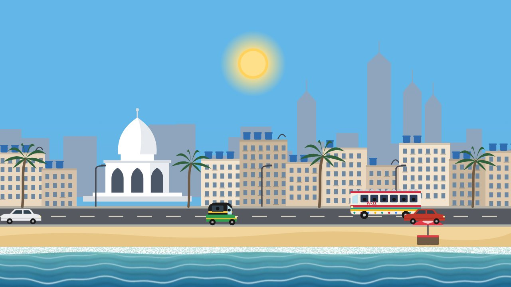
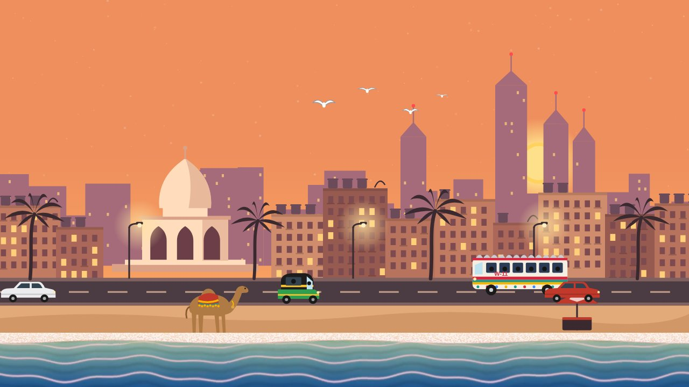
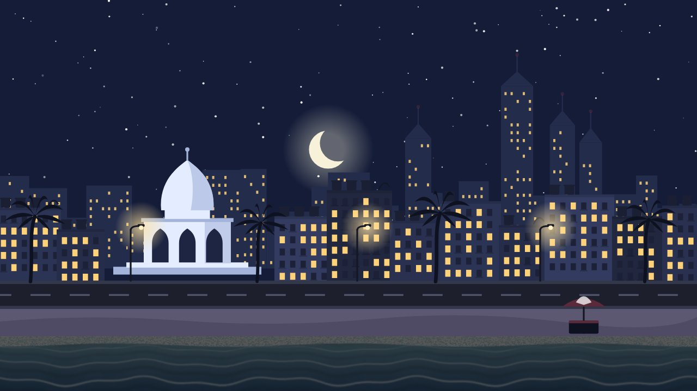

An 84 second soundscape of my hometown, Karachi, from morning to night.
The soundscape is not playing.

Morning
Crows on the rooftops wake the city up.



Sounds from the Moodist sound library (CC0 and Pixabay licence), mixed for this project. Images and video made for this project.